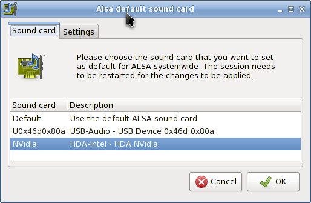

ALSA Sound Card manages the system sound card configuration. It will display available sound cards in your system and let you select the card you want to use in preference. This is particularly useful when you have multiple sound cards in your system, and you would like to assign a sound card for your system other than the one automatically picked during installation/start-up.
